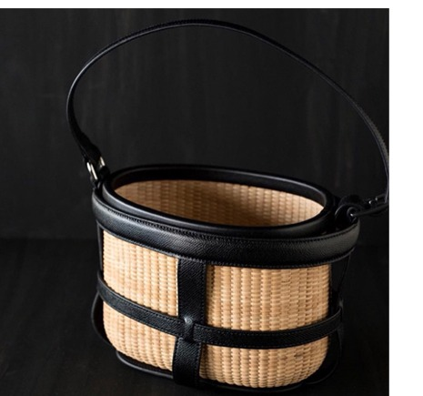

Lesson
ナンタケットバスケットの
レッスン
HISTORY — ナンタケットバスケットとは01
ナンタケット島は、アメリカ・マサチューセッツ州沖の大西洋に浮かぶ小さな島。19世紀、捕鯨の中心地だったこの島で、樽職人たちが灯台船（ライトシップ）に乗り込み、長い洋上の時間のなかで籠を編み始めました。それが「ライトシップバスケット」——ナンタケットバスケットの始まりです。
木の底板に籐を編み込む堅牢なつくりは、百年を超えて使い継がれ、いまも世代を越えて受け継がれる"使える工芸品"として愛されています。

ヌーベルナンタケットバスケット
TRINITYでお教えするのは、伝統を踏まえながら「いまの暮らしに合う籠」として生まれたヌーベルナンタケットバスケット。やわらかな縁（ソフトリム）が特徴で、日常の装いからフォーマルな場面まで寄り添います。
COURSE — レッスン内容02
初めての方
最初の作品は、直径約10cmの「4インチラウンド」。かたちを選び、木を選び、2〜3回のレッスンで完成します。
続ける方
バッグ、トレイ、蓋つきの籠——。形・サイズ・木の種類・装飾を選び、自分だけの一点を編み上げます。
資格をめざす方
ザ・ヌーベル・ナンタケットバスケット・アカデミー・オブ・ジャパンの課程についてはお問い合わせください。
料金のご案内
| 入会金 | 10,800円（アカデミー登録料を含む） |
|---|---|
| レッスン料 | 5,000円／回（1回 2時間〜2時間半） |
| 材料費 | 10,000円〜（作品・お選びになる素材により変わります） |
| スターターキット | 10,800円（ご自宅での練習用・ご希望の方のみ） |
※ 表示は現行の料金です。最新の料金はご予約時にご確認ください。
FAQ — よくあるご質問03
- 道具を持っていなくても始められますか？
- はい。編むための道具は教室にご用意していますので、手ぶらでお越しいただけます。材料費は作品ごとに別途かかります。
- 手先が器用でなくても大丈夫ですか？
- 少人数制で、講師がひと編みずつ丁寧にお伝えします。初めての方の最初の作品（4インチラウンド）も、2〜3回のレッスンで完成します。
- ひとつの籠が完成するまで、どのくらいかかりますか？
- レッスンは1回2時間〜2時間半。最初の4インチラウンドは2〜3回で完成します。その後は作品の大きさや装飾によって変わります。
- 紹介がなくても通えますか？
- 当教室はご紹介の方を中心にご案内しています。まずはLINEまたはInstagramのDMからご相談ください。
- 予約はどうすればいいですか？
- 今月のレッスン日程はブログでご案内しています。ご予約・ご相談はLINEまたはInstagramのDMからお願いします。
今月のレッスン日程はブログでご案内しています。